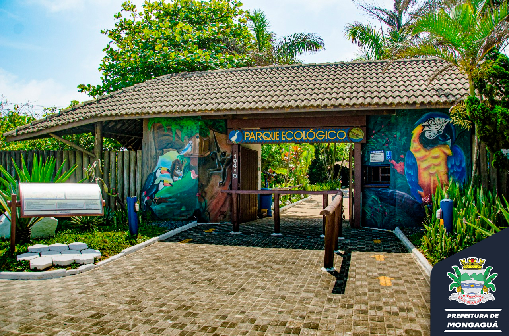
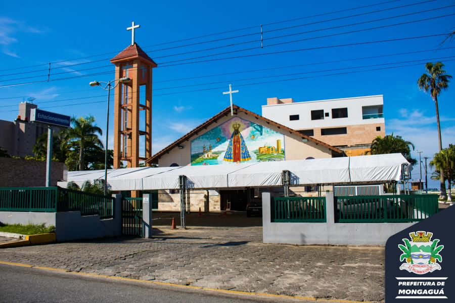

Pontos Turísticos de Mongaguá

Plataforma de Pesca
Local incrível para pesca e lazer.

Parque Ecológico
Contato direto com a natureza.

Igreja Matriz
Rica em história e arquitetura colonial.

Praia Flórida Mirim
Praia de aguas limpas, ideal para famílias.

Praça Dudu Samba
Famosa praça de eventos culturais.

Poço das Antas
Área natural para relaxar e explorar.

Feira de Artesanato
Feira de produtos locais e artesanais.

Morro da Padroeira
Vista panorâmica incrível da cidade.